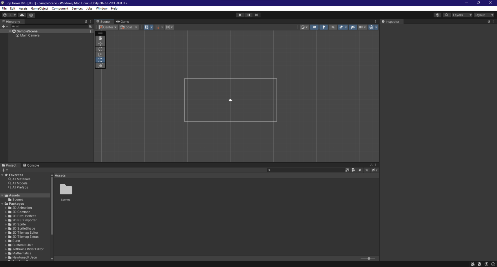
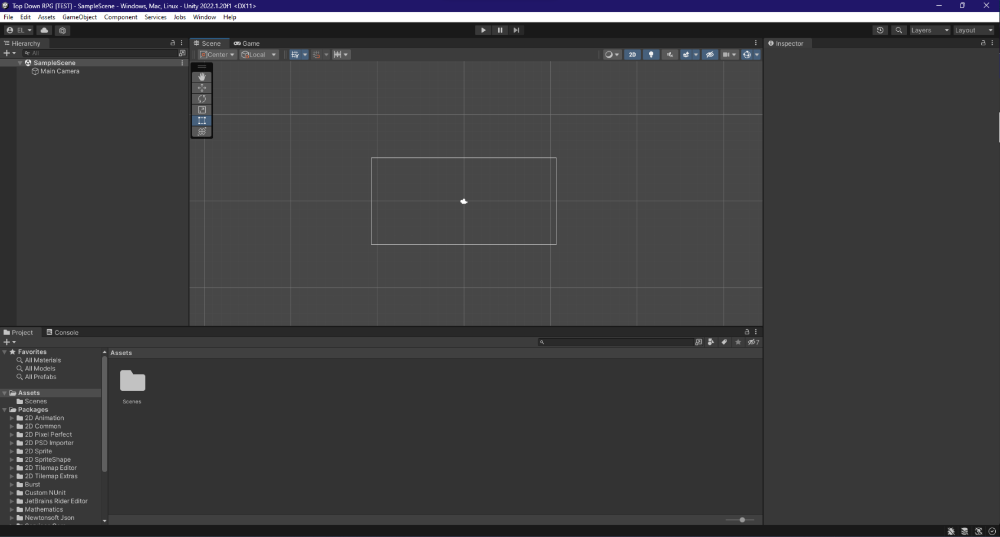

- Profil -

* Bonjour à tous ! Moi c'est Ethan.
* Passionné d'art graphique de musiques et de jeux vidéos je suis déssinateur, compositeur de musique et bientôt développeur indépendant de jeux vidéos !
* Dans mon temps libre, j'adore créer ! Imaginer des mondes, écrire des histoires, faire de la musique, ou même dessiner. Ce sont LES choses que j'aime le plus faire au monde.
* Mais j'ai aussi beaucoup d'objectifs, j'aimerais pouvoir pousser plus loin mes comptétences de création de digital art ainsi qu'en développement de jeux.
 

* J'aimerai beaucoup par exemple apprendre la création de modèles et d'animations 3D (personnages ou environement) par Blender ou autres logiciels, et j'apprends actuellement à utiliser des moteurs de jeux comme Unity ou Godot Engine.
- Formation -
* J’ai effectué mes années collège dans l’établissement du Collège Lucie-AUBRAC de Clermont-Ferrand. J’y ai obtenu mon Brevet des collèges avec metion bien.
* J’ai fais mes annés lycée au Lycée Lafayette de Clermont-Ferrand. J’ai fait un BAC Général Technologique en STI2D (Sciences et Technologies de l’Industrie et du Développement Durable) option ITEC (Innovation Technologique et Éco-Conception). J’ai eu mon bac avec mention assez bien !
* Je n’ai pas vraiment d’expérience professionnelle, si ce n’est qu’en 3ème j’ai effectué un stage d’observation à l’Agence Régionale de Santé de Clermont-Ferrand.

* Je suis actuellement en formation de développement web et web mobile. Cette formation consiste à me permettre de maitriser les languages essentiels à la création de pages web et à la gestion leur contenu. J'ai intégré cette formation pour me construire une base solide en développement et en programmation avec certains des langages les plus utilisés. Je suis également très intéressé par le développement web depuis que j'en ai fait dans mes années lycée, plus particulièrement la partie front-end et tout ce qui touche à l'html et au css !

- Compétences & Affinités -
* Comptétences :
- Créatif
- Ouvert d'esprit
- Passionné
- Motivé
* Mes affinités en langages de programmation sont les suivantes :
- HTML
- CSS
- PHP
- SQL
- JAVASCRIPT
- C#
- PYTHON
- Projets -
* J'ai pour projet d'accomplir la création d'un jeu du nom de "Midnight's Fable" dont je construit l'histoire, les personnages et les musiques depuis quelques années. Je bâti aussi depuis 7 ans, l'univers de "LEGENDARY" une futur série de webcomics qui pourront être lisibles sur mon propre futur site web ! Englobant donc la grande majorité de mes passions, ces deux principaux projets représentent beacoup pour moi. Ces passions me conduiront également à fonder avec mon frère notre studio de jeux vidéo indépendants afin de faire connaitre aux public, les dizaines d'autres histoires intéractives que nous avons passés des années à préparer/écrire.
- Galerie -
* Voici un aperçu des certains de mes oeuvres :
- Contact & Résaux-
* MAIL: ethanlerigab@gmail.com
* TÉL.: 07 67 08 21 95
* DISCORD: BauKo.#1414
* TWITTER: @BauKoArt
* INSTAGRAM: @bauko.art
* SOUNDCLOUD: BauKo.